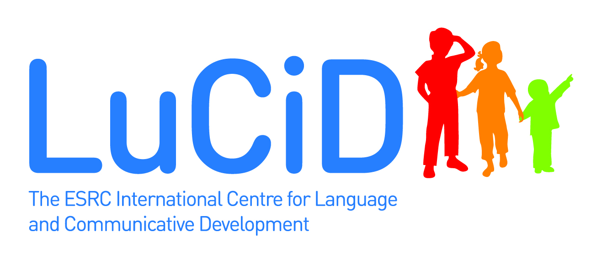

This browser allows you to examine various statistics to identify which corpus to use.
This displays figures showing how well different statistics are at generating sentences in adult and child utterances in typologically-different languages.
Childes corpora are provided in various formats, but it can be difficult to convert them into data.frames which can be used in R for various analyses. Childes2csv is a program that generates CSV files directly from CHILDES XML files. It can generate word or utterance level corpora at different levels (e.g., dialects, languages). More information about how to use it is available at the bottom of the page.
Another task that one often needs to do is to filter corpora for words/utterances that match particular rules. Also, it is useful to be able to count the number of rows for particular categories in the corpus. Both of these can be done with the Filter Combine CHILDES Analyses program.
This allows you to examine 1- to 4-grams in various corpora
This work is part of the toolkit project within the ESRC International Centre for Language and Communicative Development (LuCiD) (http://www.lucid.ac.uk/, ESRC grant [ES/L008955/1]). Please contact Franklin Chang with any questions.
To cite these tools, please use this reference: Chang, F. (2017) The LuCiD language researcher’s toolkit [Computer software]. Retrieved from http://www.lucid.ac.uk/resources/for-researchers/toolkit/